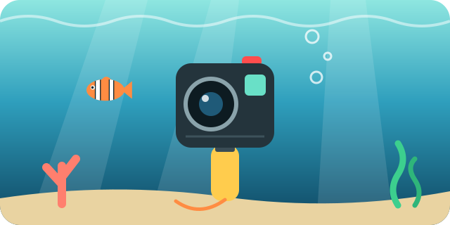
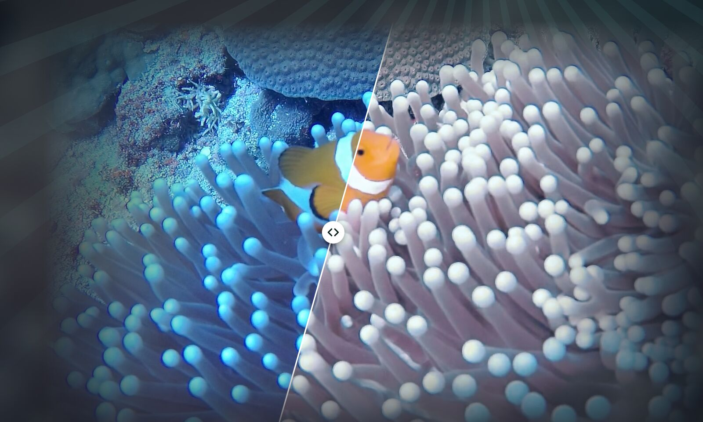

UnderBlue › Guías de fotografía y vídeo submarinos
Cámara de acción bajo el agua: qué revisar antes de bucear

Las cámaras de acción son pequeñas, resistentes y fáciles de llevar al bucear. Pero un pequeño error puede inundar la cámara o arruinar las imágenes.
Revisa estos puntos antes de meterte en el agua.
Conoce la profundidad máxima
Muchas cámaras de acción son sumergibles sin carcasa, pero solo hasta una profundidad limitada. Mira el valor en el manual. Para inmersiones más profundas, usa la carcasa de buceo del fabricante.
Revisa todas las tapas y juntas
- Cierra del todo la tapa de la batería y la tapa del objetivo.
- Quita la arena, los pelos y la sal de las juntas. Un solo pelo puede dejar pasar el agua.
Evita el vaho antes de que aparezca
El vaho se forma cuando el aire cálido y húmedo del interior se encuentra con el agua fría. Cierra la carcasa en una habitación fresca y seca. Usa insertos antivaho si los tienes.
Batería y almacenamiento
- El agua fría gasta la batería más rápido. Empieza con la batería llena.
- Empieza con una tarjeta de memoria vacía o con mucho espacio libre.
- Apaga el Wi-Fi y la pantalla frontal si no los necesitas.
Aprende los botones en tierra
Las pantallas táctiles no funcionan bien bajo el agua ni dentro de una carcasa. Antes de la inmersión, aprende a iniciar, detener y cambiar de modo con los botones.
Acércate más de lo que crees
Las cámaras de acción tienen un gran angular muy amplio. Los peces se ven pequeños y lejanos si no estás cerca. Acércate más de lo que te parece natural, pero no toques nunca la fauna marina ni el coral.
Mantén la cámara sujeta a ti
Una cámara pequeña se cae con facilidad y cuesta encontrarla. Usa una correa de muñeca, un cordón en espiral o un asa flotante.
Usa los filtros de color con cuidado
- Un filtro rojo devuelve el rojo en el agua azul.
- Un filtro magenta es para el agua verde.
- En aguas muy poco profundas, un filtro puede dejar la imagen demasiado roja o rosa.
- Prueba primero el filtro y los ajustes de color en aguas poco profundas.
Después de la inmersión
Aclara la cámara con agua dulce y sécala antes de abrir ninguna tapa. Después, copia tus clips al iPhone con la app del fabricante de la cámara, en la app Fotos o en la app Archivos.
Corrige el color con UnderBlue
Las imágenes de una cámara de acción suelen verse azules o verdes. Copia el clip a tu iPhone y ábrelo en UnderBlue desde la app Fotos o la app Archivos. UnderBlue mantiene el color estable en todo el clip.
UnderBlue devuelve el color natural a tus fotos y vídeos submarinos en el iPhone. Elige un aspecto, compáralo con el original y guarda. Todo se procesa en tu iPhone, sin cuenta y sin subir nada. Puedes probarla gratis.

